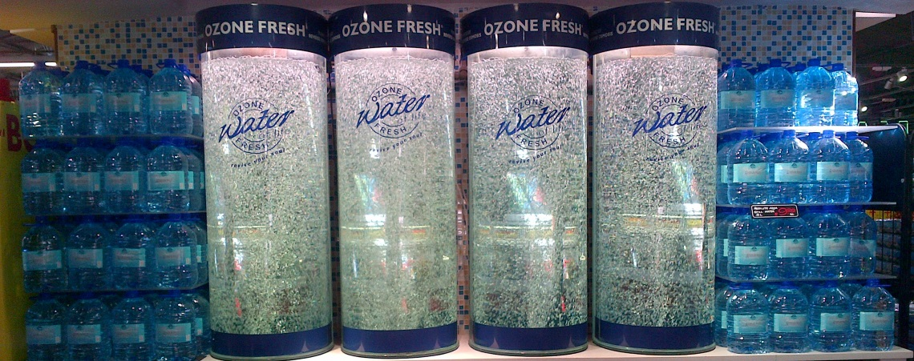

PURE Lifestyle supplies the full range of water purification equipment, from basic filter systems to purifiers and dispensing units as well as a full range of replacement filters. Price is an issue seriously considered by us at PURE lifestyle.
Whether your need be domestic, office, retail, hospitality or catering, we will be able to meet your needs.
"Before entering the water purification industry, I perceived it as aggressive and overbearing in sales technique, poor in knowledge, high on price, quick on the sale and shocking in after sales follow-up - all examples of how not to manage a business. Being part of the industry now, my perceptions have been confirmed, despite some exceptions." says Hadyn.
We have made sure that we will not be like the rest.
At Pure Lifestyle, we are not merely interested in 'making the sale'; rather we focus on the following:
© Formulated by codelab.